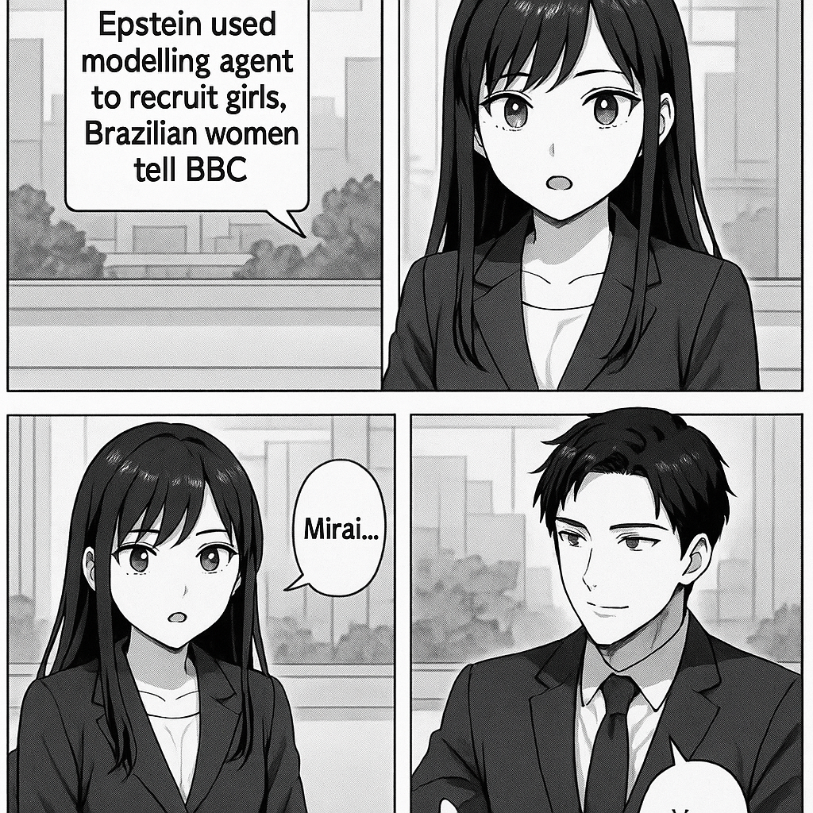

こんにちは！新人ニュースキャスターのミライです。今日は、ちょっと難しいニュースをわかりやすく説明しますね。 ニュースの内容は、「エプスタインさんが、モデルを探す仕事をしている人を使って、女の子たちを集めていた」というものです。 ブラジルに住む女性たちがBBCというニュース番組に話しました。その女性たちは、「このモデルの仕事を紹介する人が、ビジネスを使って、女の子を集めたり、アメリカに行くためのビザを手配したりしていた」と言っています。 エプスタインさんは昔から問題になっていて、このニュースは、どうやってエプスタインさんがたくさんの女の子を集めていたのか、ということが少しずつ明らかになってきた、ということなんです。 つまり、モデルのエージェントという仕事を使って、女の子たちをアメリカに連れて行き、エプスタインさんに会わせていた、という話です。 わかりましたか？もしもっと知りたいことがあったら教えてくださいね！

国際情勢アナリストのソウマです。 このニュースは、ジェフリー・エプスタインが少女のリクルートにモデル事務所の代理人を利用していたと、ブラジルの女性たちがBBCに証言したという内容です。エプスタインは過去に未成年者の性的搾取で国際的に非難されており、この新証言は彼の犯行がより組織的かつ国際的なネットワークを通じて行われていた可能性を示しています。今後、関係者の特定や国際的な取り締まり強化に影響を与える重要な証言になるでしょう。
トップへ戻る